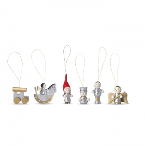
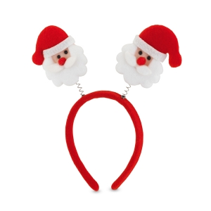
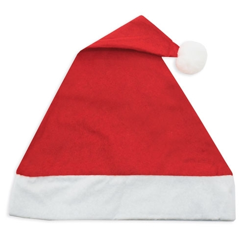

Natal e encontros de fim de ano
Uma oferta pode integrar um agradecimento, um encontro de equipa, uma atividade de associação ou uma entrega de fim de ano. Comece pelo gesto pretendido: agradecer uma colaboração não exige o mesmo artigo que apoiar uma oficina ou acolher participantes.
Confirme se a referência ao Natal faz sentido para quem recebe. Uma mensagem de agradecimento ou de fim de ano pode permitir uma participação mais inclusiva, sem reduzir todas as pessoas a uma tradição religiosa ou familiar.
Presentes: histórias diferentes, sem origem única
A troca de presentes não começou na época vitoriana. Historic Royal Palaces documenta ofertas de Ano Novo na corte inglesa de Henrique VIII, no século XVI. Trata-se de um contexto de corte, anterior ao século XIX, não de uma descrição de todas as famílias ou países. Fonte
O V&A descreve a crescente centralidade do Natal na Grã-Bretanha vitoriana e a deslocação de práticas de oferta ligadas ao Ano Novo para a celebração natalícia. A mudança britânica não estabelece uma origem universal nem explica, por si só, as práticas portuguesas. Fonte
As tradições pessoais e familiares e o uso contemporâneo de artigos em ações de comunicação são planos diferentes. As fontes históricas consultadas não demonstram a data de início de brindes promocionais de Natal em Portugal.
Quem oferece, quem recebe e com que objetivo
Equipas podem agradecer a trabalhadores, colaboradores ou clientes; escolas e associações podem preparar encontros para famílias e participantes; municípios podem apoiar iniciativas comunitárias. A escolha deve partir da relação concreta e do modo como a pessoa receberá o objeto.
Diferencie uma entrega individual de uma mesa de materiais numa atividade aberta. Num agradecimento, a mensagem pessoal pode ter mais significado que acrescentar peças a um conjunto. Num encontro, a prioridade pode ser facilitar a participação, sem oferta para levar.
Exemplos ligados à ocasião
Caderno e instrumento de escrita: podem acompanhar uma mensagem de continuidade para o ano seguinte, quando a pessoa usa apontamentos. Uma agenda datada exige confirmar o período e a rotina; não é equivalente a um caderno sem datas.
Caneca ou outro recipiente: pode fazer sentido numa pausa ou contexto doméstico, avaliando pega, limpeza e instruções. A apresentação natalícia não demonstra aptidão para bebidas quentes ou conservação térmica.
Manta, pequeno objeto para casa ou conjunto de uso pessoal: considere o espaço que ocupa e o que a pessoa terá de transportar. Uma caixa e um cartão podem reunir peças complementares; não é preciso aumentar o conjunto para tornar o agradecimento claro.
Exemplos em contexto
Estes exemplos relacionam objetos com uma utilização concreta. A escolha depende de quem participa e das condições da atividade; as imagens não comprovam materiais, desempenho ou adequação.
Ornamentos para uma decoração partilhada

Contexto
Uma atividade de associação, escola ou equipa em que
os participantes decoram um espaço comum, se essa celebração fizer sentido para o
grupo.
Razão da escolha
O objeto fica ligado a uma ação concreta:
escolher onde o colocar e compor a decoração. Pode também acompanhar um cartão para
levar para casa, sem exigir um conjunto volumoso.
Aspetos a confirmar
Observe dimensões, forma de suspensão,
armazenamento e eventuais peças destacáveis. Um ornamento decorativo não deve ser
tratado automaticamente como brinquedo. Confirme se o desenho e o espaço de
personalização permitem uma mensagem legível.
Adereços para uma participação breve

Contexto
Um momento de animação ou fotografia num encontro,
com utilização voluntária e possibilidade de participar sem adereço.
Razão da escolha
Pode marcar visualmente o momento festivo sem
acrescentar uma peça de vestuário completa. Faz mais sentido quando há uma atividade
preparada do que numa entrega sem contexto.
Aspetos a confirmarVerifique ajuste, fixações, conforto e instruções para o utilizador previsto. Combine como será distribuído e guardado; não deduza adequação infantil ou resistência das molas pela imagem.
Gorros numa atividade de grupo

Contexto
Uma equipa de acolhimento ou um grupo que escolheu
uma apresentação festiva para um encontro.
Razão da escolha
Uma peça visual comum pode ajudar a
reconhecer o grupo durante a atividade. Se o objetivo for apenas acompanhar um
agradecimento pessoal, um cartão ou outro artigo pode ter mais utilidade.
Aspetos a confirmar
Confirme medidas, composição e cuidados da
peça, bem como a visibilidade da mensagem quando está colocada. A forma de gorro
natalício não demonstra proteção contra frio nem torna a utilização obrigatória.
Escolher pelo uso e pela forma de entrega
Confirme destinatários, variantes e necessidades de acessibilidade. Num grupo, podem existir preferências culturais e formas de utilização diferentes; permita recusar a oferta sem prejudicar a participação.
Observe o objeto e a apresentação juntos. Teste abertura, leitura da mensagem, espaço interior e transporte até casa. Separe entrega em mão de envio: uma caixa de apresentação não demonstra proteção durante expedição.
Planear mensagem, preparação e distribuição
Defina primeiro a ocasião de entrega e confirme, para esse projeto, tempos de aprovação, personalização, montagem e transporte. Não há um prazo universal de produção aplicável a todos os artigos.
Reveja nomes, idiomas, data e lista de destinatários antes da aprovação. Se houver vários locais ou turnos, prepare identificação dos conjuntos e responsáveis pela entrega. Decida antecipadamente o destino de artigos não levantados.
Agradecimento, inclusão e responsabilidade
O objetivo de agradecer não prova fidelização, notoriedade ou vendas. Pode recolher apreciações voluntárias sobre utilidade e apresentação, sem tratar a entrega como evidência de um resultado promocional.
A Agência Europeia do Ambiente enquadra a utilização prolongada de produtos e materiais na economia circular. Fonte Para esta oferta, avalie necessidade, embalagem, cuidados e uso posterior; um motivo festivo ou material não comprova menor impacto ambiental.
Mensagem e personalização
Escolha uma mensagem legível à dimensão real e confirme se deve aparecer no objeto ou apenas no cartão. Uma apresentação que se retira depois da entrega pode permitir que o artigo continue a ser usado noutros contextos.
Identifique material, acabamento e zona antes de escolher a técnica. Em conjuntos, cada componente pode exigir uma avaliação diferente; a compatibilidade não se transfere automaticamente do artigo para a embalagem.
Perguntas frequentes
Oferecer no Natal exige uma mensagem religiosa?
Não. Confirme o contexto e os destinatários; um agradecimento de fim de ano pode corresponder melhor à iniciativa.
Uma oferta de fim de ano tem de ser um conjunto?
Não. Um artigo útil, uma mensagem ou uma atividade sem objeto podem cumprir o propósito escolhido.
A prática de oferecer presentes nasceu no século XIX?
Não. As fontes aqui usadas documentam contextos britânicos anteriores e transformações vitorianas, sem uma origem universal.